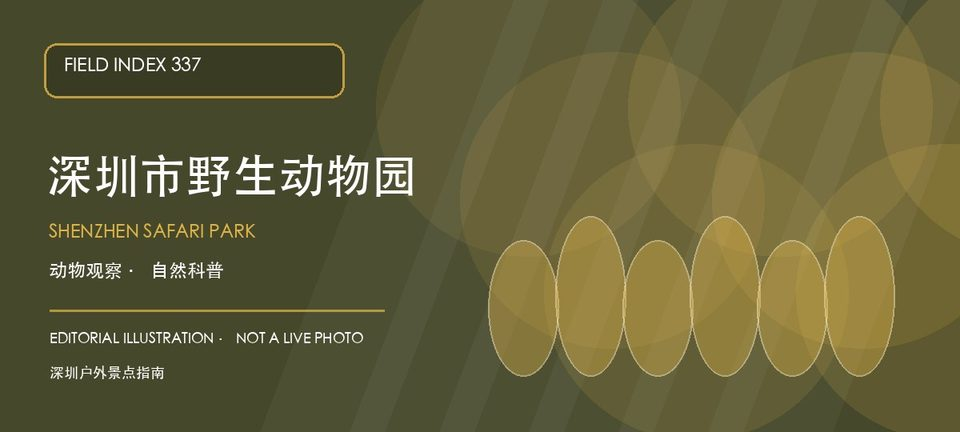

适合谁
适合亲子、自然教育和动物爱好者；幼童、长者或不耐高温同行者应减少连续步行并安排室内或树荫休息。

SHENZHEN GUIDE · 337
南山区西丽湖路东侧 · 野生动物园
深圳市野生动物园是西丽湖片区的大型动物主题景区，适合把动物观察、科普教育和户外步行组合成一日行程。园区尺度较大，动物状态、展区开放和活动时间都会影响实际体验，初访应先选重点动物区和休息节点，不要只按地图追赶全部展区。高温、暴雨和节假日客流时更要预留机动时间。
WHY GO
适合亲子、自然教育和动物爱好者；幼童、长者或不耐高温同行者应减少连续步行并安排室内或树荫休息。
先确认当天开放展区、动物活动和喂养演示，再按重点动物区规划一条主线；准备饮水、防晒和儿童集合约定，遇到高温或雷雨及时转移。
公共交通先到西丽湖片区，再按深圳市野生动物园官方公开入口导航；出发前核对开放入口、接驳与当日活动安排。
自驾按景区官方入口或配套正规停车场导航；车位、收费与社会车辆准入以现场公告为准，不在西丽湖路、出入口和消防通道临停。
秋冬和春季较适合连续户外观察；夏季选择早晚、补水防晒，雷雨、高温预警或动物展区调整时及时缩短路线。
NEARBY IDEAS
 授权实景图
授权实景图
西丽湖位于西丽大学城与山地交界，湖区、校园和麒麟山等山体构成较安静的城郊景观，但公开道路、校园门禁和水库管理边界必须区分。
 授权实景图
授权实景图
塘朗山郊野公园位于桃源龙珠片区，最高点塘朗顶与盘山道路、山林支路组成靠近城区的郊野系统，短距离也有持续爬升和湿滑风险。
 编辑配图·非现场实景
编辑配图·非现场实景
深圳市水土保持科技示范园位于西丽街道沙河西路4148号，由废弃采石场修复而来的公益性科普园，以水土文化、水土流失模拟、植…